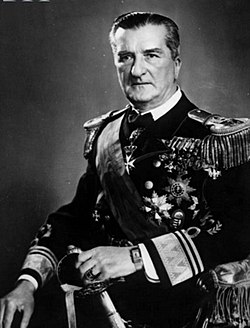

Vitéz nagybányai Horthy Miklós (Kenderes, 1868. június 18.[1] – Estoril, Portugália, 1957. február 9.) magyar politikus, a 20. századi magyar történelem meghatározó alakja. Az Osztrák–Magyar Haditengerészet tengerésztisztje, 1909–1914 között Ferenc József szárnysegédje, ellentengernagyként a flotta utolsó főparancsnoka volt. Az uralkodó a világháború végén altengernaggyá léptette elő. Az első világháborút követő proletárdiktatúra összeomlása után megszilárdította az államhatalmat. 1920. március 1-jétől 1944. október 16-ig ő volt a Magyar Királyság kormányzója. Portugáliai emigrációban halt meg, 1957-ben. 1993. szeptember 4-én temették újra Kenderesen. Megítélése napjainkban is komoly vita tárgya.
